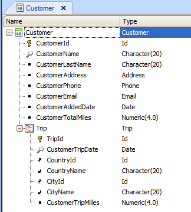

Most of the times it isn't necessary to explicitly in transaction rules, the level in which we want them to be triggered because the involved attributes in them are sufficient for GeneXus to determine its associated level.
However, there is an optional clause called Level that allows you to modify the default level for triggering a rule, changing it to a later level.
Any valid Transaction rule [ IF condition ] [ON triggering event] [Level Att…] ;
condition
Is any valid logic condition
triggering event
Is one of the predefined events available in GeneXus for transaction rules, which allows you to define the precise time for executing a rule
Att
Specifies an attribute or list of attributes separated by semi-colon
Example

If you don't want to allow the user deleting lines, you should define the following rule:
Error(‘Trips cannot be deleted’) if delete level TripDate;
If you don't include in the rule the Level clause followed by a 2nd level attribute, the first level will be associated by default to the rule. In other words, the error text will be displayed when the user try to delete a customer. But you want to avoid the user deleting lines with trips, and you don't need to evaluate a 2nd level attribute in the rule as a condition neither send a 2nd level attribute as a parameter. So, the Level clause helps you to mention a 2nd level attribute, just to let GeneXus know that the triggering level associated to the rule is the second and not the first.
The Level(att) function is maintained for backward compatibility reasons. We highly recommend the use of the Level clause instead. For furhter information see Triggering events for rules in Transactions.
Objects Transaction object
Triggering events for rules in Transactions
Transaction rules
After Action Triggering event
|